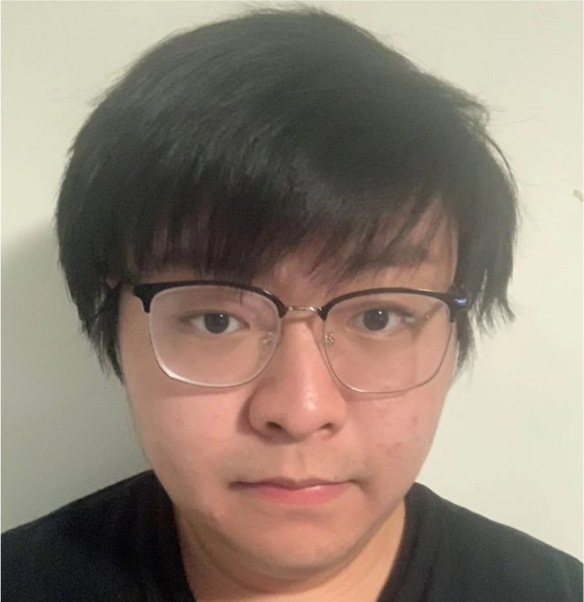

|  | Junlin Han |
Profile
Greetings, welcome to my website!- I am a third-year undergraduate student at ANU. Currently, I'm working at Data61 (formerly known as NICTA), where I'm fortunate to be co-advised by Dr. Lars Petersson and Prof. Hongdong Li. I'm also a visiting research intern at AIML, University of Adelaide, advised/hosted by Prof. Ian Reid.
- I'm especially in favor of simple ideas that make vision & graphics work.
News
- [02.2022] You Only Cut Once (YOCO) is out, which is a simple method/strategy of performing augmentations. YOCO benefits almost all augmentations in multiple vision tasks (classification, contrastive learning, object detection, instance segmentation, image deraining, image super-resolution). Chcek the GitHub page for more.
- [12.2021] Very fortunately, I joined Australian Institute for Machine Learning (AIML), University of Adelaide as a visiting research intern, hosted by Prof. Ian Reid.
- [08.2021] Our latest paper, Blind Image Decomposition is out. A novel computer vision/graphics task. BIDeN (Blind Image Decomposition Network) is designed to serve as a baseline. Chcek the project page for more.
- [04.2021] A paper (Topic: Image-to-Image Translation) accepted to NTIRE (CVPRW) 2021 as oral presentation. The new SOTA method for unsupervised image-to-image translation. Code is available.
- [03.2021] A paper (Topic: Underwater Image Restoration) accepted to IGARSS 2021 as oral presentation. Code and dataset are available.
Research Interests
- My research interests lie in computer vision & computer graphics, and I'm always looking for ways to apply graphics techniques to vision, or vice versa. I'm also interested in machine learning and applications in remote sensing.
- My past and ongoing work span content creation, visual perception, scene understanding, image restoration/enhancement, self-supervised representation learning, 3D vision, data augmentation, etc.
Education
Undergraduate (02.2019 - 06.2023)- B.S. Information Technology (Honours), College of Engineering and Computer Science, ANU GPA in US standard: 3.95/4.0
Experience
Visiting Research Intern at AIML, University of Adelaide (12.2021 - ongoing)- Topics: data-centric learning, implicit representation, 3D vision
- Advised/Hosted by Prof. Ian Reid
- Topics: low-level vision, generative models, self-supervised learning
- Advised by Dr. Lars Petersson, Prof. Hongdong Li
Publications
Talks
I share some of my talks and slides here, please feel free to use them if you are interested in.Services
- Conference review CVPR 2022, ICML 2022, ECCV 2022
- Journal review Transactions on Image Processing (TIP), Pattern Recognition, Neurocomputing, Photonics Journal (PJ), Journal of Oceanic Engineering (JOE)
- Workshop review NTIRE (CVPRW) 2021
Skills
- Programming Language Proficient in MATLAB, Python
- Tool NumPy, PyTorch, Git, LaTeX
- Language English (Fluent), Madarian (Native)
Familiar with Java, Haskell, R, CSS, Html, Assembly (ARMV7), SQL
Awards
- Second Best Presentation Award, 2021 AIM (Active Integrated Matter) Conference
- Top-up Scholarship, 2021 for research work at Data61, CSIRO
- Undergraduate Vacation Scholarship, 2020 for summer research at Data61, CSIRO
unique visitors since April 2021